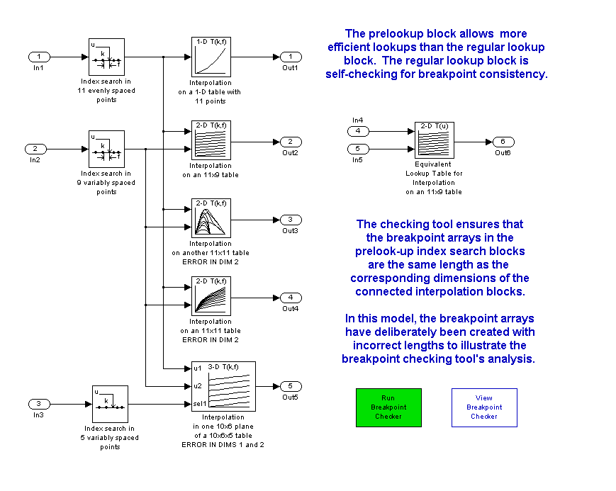
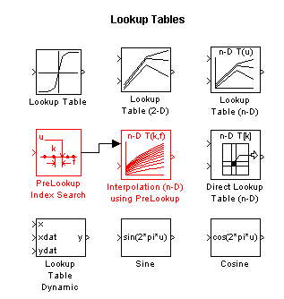
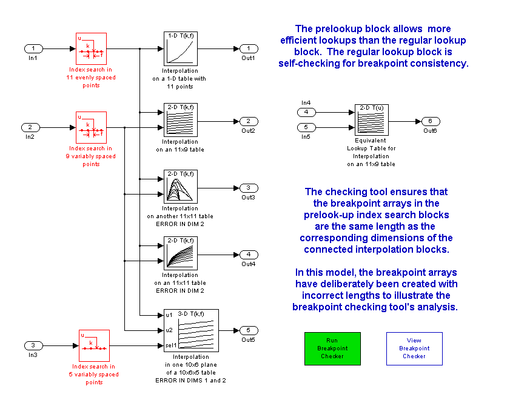
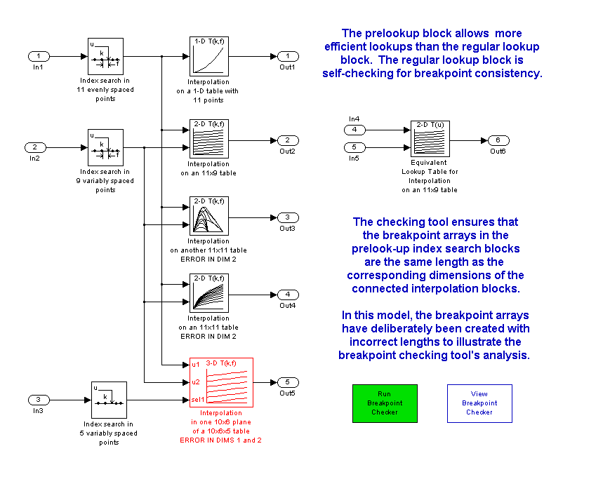

<html xmlns:mwsh="http://www.mathworks.com/namespace/mcode/v1/syntaxhighlight.dtd">
   <head>
      <meta http-equiv="Content-Type" content="text/html; charset=utf-8">
   
      <!--
This HTML is auto-generated from an M-file.
To make changes, update the M-file and republish this document.
      -->
      <title>Using the PreLookUp and Interpolation (n-D) Blocks</title>
      <meta name="generator" content="MATLAB 7.0">
      <meta name="date" content="2004-03-20">
      <meta name="m-file" content="sldemo_prelookup_script"><style>
body {
  background-color: white;
  margin:10px;
}
h1 {
  color: #990000; 
  font-size: x-large;
}
h2 {
  color: #990000;
  font-size: medium;
}
p.footer {
  text-align: right;
  font-size: xx-small;
  font-weight: lighter;
  font-style: italic;
  color: gray;
}

pre.codeinput {
  margin-left: 30px;
}

span.keyword {color: #0000FF}
span.comment {color: #228B22}
span.string {color: #A020F0}
span.untermstring {color: #B20000}
span.syscmd {color: #B28C00}

pre.showbuttons {
  margin-left: 30px;
  border: solid black 2px;
  padding: 4px;
  background: #EBEFF3;
}

pre.codeoutput {
  color: gray;
  font-style: italic;
}
pre.error {
  color: red;
}

/* Make the text shrink to fit narrow windows, but not stretch too far in 
wide windows.  On Gecko-based browsers, the shrink-to-fit doesn't work. */ 
p,h1,h2,div {
  /* for MATLAB's browser */
  width: 600px;
  /* for Mozilla, but the "width" tag overrides it anyway */
  max-width: 600px;
  /* for IE */
  width:expression(document.body.clientWidth > 620 ? "600px": "auto" );
}

    </style></head>
   <body>
      <h1>Using the PreLookUp and Interpolation (n-D) Blocks</h1>
      <introduction>
         <p>The PreLook-Up Index Search block allows you to minimize the number of index searches performed across a set of look-up tables
            and also to mix clipping, extrapolation, and index search algorithms within one table calculation.  (Open the model: <a href="matlab:sldemo_bpcheck">matlab:sldemo_bpcheck</a>)
         </p>
      </introduction>
      <h2>Contents</h2>
      <div>
         <ul>
            <li><a href="#1">Introduction</a></li>
            <li><a href="#4">Optimization: PreLookup Index Search + Interpolation (n-D) Blocks</a></li>
            <li><a href="#6">Optimization: Sub-table selection option in the Interpolation (n-D)</a></li>
         </ul>
      </div>
      <h2>Introduction<a name="1"></a></h2>
      <p>This model uses prelookup and interpolation (n-D) blocks. Note how the prelookup block perform the index search portion of
         the computation and the inteplation blocks perform the rest:
      </p><pre class="codeinput">mdl = <span class="string">'sldemo_bpcheck'</span>;
open_system(mdl)
</pre> <p>[Close the model to reset the screen capture]</p><pre class="codeinput">close_system(mdl)
</pre><p>These blocks can be found in the Simulink block library under the Look-Up Tables sub-library:</p><pre class="codeinput">open_system(<span class="string">'simulink'</span>)
open_system(sprintf(<span class="string">'simulink/Lookup\nTables'</span>),<span class="string">'simulink'</span>,<span class="string">'replace'</span>)
hilite_system([ gcs, sprintf(<span class="string">'/PreLookup\nIndex Search'</span>)], <span class="string">'different'</span>)
hilite_system([ gcs, sprintf(<span class="string">'/Interpolation (n-D)\nusing PreLookup'</span>)], <span class="string">'different'</span>)
</pre> <h2>Optimization: PreLookup Index Search + Interpolation (n-D) Blocks<a name="4"></a></h2>
      <p>Use of the PreLookup Index Search block should be considered for tables with intensive index searches in breakpoint sets.
          The preLookup Index Search block allows you to do an index search once and reuse the result in many table lookups.  In this
         model, 3 index search results are used in 5 blocks in a total of 10 uses.  Equivalent regular lookup tables such as the example
         to the right would have required 10 index searches instead of 3.
      </p><pre class="codeinput">open_system(mdl)
preblks = find_system(<span class="string">'sldemo_bpcheck'</span>,<span class="string">'MaskType'</span>,<span class="string">'LookupIdxSearch'</span>);
<span class="keyword">for</span> k=1:length(preblks)
    hilite_system( preblks{k}, <span class="string">'different'</span> );
<span class="keyword">end</span>
</pre> <p>[Close the model to reset the screen capture]</p><pre class="codeinput">close_system(mdl)
close_system(<span class="string">'simulink'</span>)
</pre><h2>Optimization: Sub-table selection option in the Interpolation (n-D)<a name="6"></a></h2>
      <p>One of the Interpolation (n-D) blocks in this model is configured using a capability that is new in Simulink 6.0: trailing
         dimensions of an n-D table can be marked as "selection dimensions", meaning that the input for that dimension is an integer
         used only to make a sub-table selection, such as picking a 2-D plane from a 3-D table.  The sub-table is then interpolated
         normally.
      </p>
      <p>Interpolation of sub-tables can save tremendous amounts of computation. For every dimension eliminated from interpolation,
         the computation almost halves.  Since an N-dimensional interpolation takes (2^N)-1 individual interpolation operations (y
         = ylow + f*(yhigh-ylow)), even just one dimension of selection can almost double the speed of the interpolation. Extreme example:
         a 5-D table with 3 dimensions of sub-table selection and 2-D interpolation: 5-D interpolation would take 2^5-1 = 31 interpolations,
         but a 2-D interpolation takes only 2^2 - 1 = 3.
      </p>
      <p>The selection ports support vectorization to allow multiple sub-table selection / interpolations in a single block.</p><pre class="codeinput"><span class="comment">% highlight the Interpolation n-D block that is</span>
<span class="comment">% configured for sub-table selection</span>
open_system(mdl)
subblk = find_system(<span class="string">'sldemo_bpcheck'</span>, <span class="keyword">...</span>
                      <span class="string">'MaskType'</span>,         <span class="string">'LookupNDInterpIdx'</span>,<span class="keyword">...</span>
                      <span class="string">'NumSelectionDims'</span>, <span class="string">'1'</span> );
hilite_system( subblk{1}, <span class="string">'different'</span> );
</pre> <p>The sub-table or multi-table mode of operation is activated by setting a non-zero integer for the Number of sub-table selections
         dimensions parameter in the block's parameter dialog.  The number you set is interpreted as the number of dimensions to select
         from the highest dimensions.  For example, if you have a 3-D table and choose 2, that means the first dimension will be interpolated
         and dimensions 2 and 3 will be selected:
      </p><pre class="codeinput">open_system( subblk{1} )
</pre><p>[close dialog]</p><pre class="codeinput">close_system( subblk{1} )
</pre><p>NOTE: you can remove highlighting from a model using the View / Remove highlighting menuitem or this command:</p><pre class="codeinput">set_param(mdl,<span class="string">'HiliteAncestors'</span>,<span class="string">'none'</span>)
</pre><p class="footer">Copyright 1990-2004 The MathWorks, Inc.<br>
         Published with MATLAB&reg; 7.0<br></p>
      <!--
##### SOURCE BEGIN #####
%% Using the PreLookUp and Interpolation (n-D) Blocks
% The PreLook-Up Index Search block allows you to minimize the number
% of index searches performed across a set of look-up tables and also 
% to mix clipping, extrapolation, and index search algorithms within 
% one table calculation.  (Open the model: <matlab:sldemo_bpcheck>)
%

%   Copyright 1990-2004 The MathWorks, Inc.
%   $Revision: 1.1.4.1 $  $Date: 2004/04/01 16:22:05 $

%% Introduction 
% This model uses prelookup and interpolation (n-D) blocks. Note how the 
% prelookup block perform the index search portion of the computation 
% and the inteplation blocks perform the rest:

mdl = 'sldemo_bpcheck';
open_system(mdl)

%%
% [Close the model to reset the screen capture]

close_system(mdl)

%%
% These blocks can be found in the Simulink block library under
% the Look-Up Tables sub-library:

open_system('simulink')
open_system(sprintf('simulink/Lookup\nTables'),'simulink','replace')
hilite_system([ gcs, sprintf('/PreLookup\nIndex Search')], 'different')
hilite_system([ gcs, sprintf('/Interpolation (n-D)\nusing PreLookup')], 'different')

%% Optimization: PreLookup Index Search + Interpolation (n-D) Blocks
% Use of the PreLookup Index Search block should be considered for 
% tables with intensive index searches in breakpoint sets.  The preLookup
% Index Search block allows you to do an index search once and reuse the 
% result in many table lookups.  In this model, 3 index search results 
% are used in 5 blocks in a total of 10 uses.  Equivalent regular lookup 
% tables such as the example to the right would have required 10 index 
% searches instead of 3.

open_system(mdl)
preblks = find_system('sldemo_bpcheck','MaskType','LookupIdxSearch');
for k=1:length(preblks)
    hilite_system( preblks{k}, 'different' );
end

%%
% [Close the model to reset the screen capture]

close_system(mdl)
close_system('simulink')

%% Optimization: Sub-table selection option in the Interpolation (n-D)
% One of the Interpolation (n-D) blocks in this model is configured using
% a capability that is new in Simulink 6.0: trailing dimensions of an
% n-D table can be marked as "selection dimensions", meaning that the
% input for that dimension is an integer used only to make a sub-table
% selection, such as picking a 2-D plane from a 3-D table.  The sub-table
% is then interpolated normally.
%
% Interpolation of sub-tables can save tremendous amounts of computation.
% For every dimension eliminated from interpolation, the computation 
% almost halves.  Since an N-dimensional interpolation takes (2^N)-1
% individual interpolation operations (y = ylow + f*(yhigh-ylow)), even 
% just one dimension of selection can almost double the speed of the 
% interpolation. Extreme example: a 5-D table with 3 dimensions of 
% sub-table selection and 2-D interpolation: 5-D interpolation would 
% take 2^5-1 = 31 interpolations, but a 2-D interpolation takes 
% only 2^2 - 1 = 3.
%
% The selection ports support vectorization to allow multiple sub-table 
% selection / interpolations in a single block. 

% highlight the Interpolation n-D block that is
% configured for sub-table selection
open_system(mdl)
subblk = find_system('sldemo_bpcheck', ...
                      'MaskType',         'LookupNDInterpIdx',...
                      'NumSelectionDims', '1' );
hilite_system( subblk{1}, 'different' );

%%
% The sub-table or multi-table mode of operation is activated by setting
% a non-zero integer for the Number of sub-table selections dimensions 
% parameter in the block's parameter dialog.  The number you set is 
% interpreted as the number of dimensions to select from the highest
% dimensions.  For example, if you have a 3-D table and choose 2, that
% means the first dimension will be interpolated and dimensions 2 and 3
% will be selected:

open_system( subblk{1} )

%%
% [close dialog]

close_system( subblk{1} )

%%
% NOTE: you can remove highlighting from a model using 
% the View / Remove highlighting menuitem or this command:

set_param(mdl,'HiliteAncestors','none')

##### SOURCE END #####
-->
   </body>
</html>